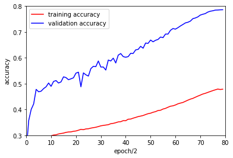

Figure 1.
EfficientNet-B4を再現しようとしたら学習に20日間かかるというので,patchsizeを380から360, epochを3501から160 epochにして実験. RMSPropはうまく行かなかったのでMomentumSGD + cosine annealingを使った.その他のパラメータは
Batchsize / GPU = 16
GPUs = 9
Initial learning rate = 0.6
残念ながらfig.1の通りunderfittingした状態のまま学習が終わってしまった.
とはいえちゃんと350epoch回とか,あるいはAdaBoundを使うなりすればvalidation accuracy = 0.826に届きそう.10日間の成果はちゃんと供養してあげたい.